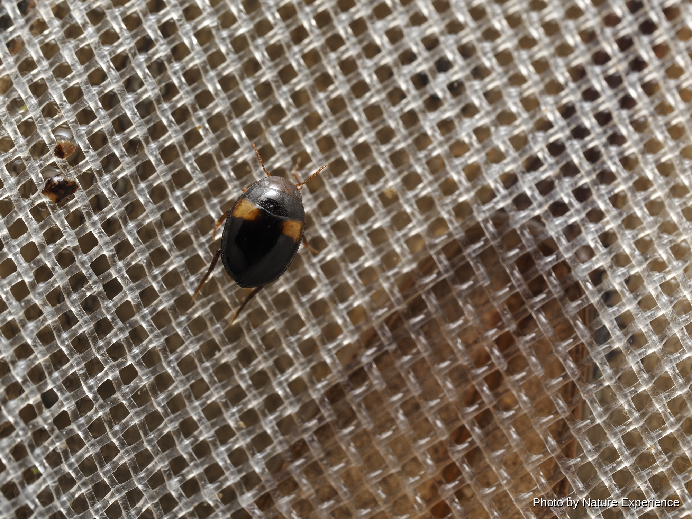
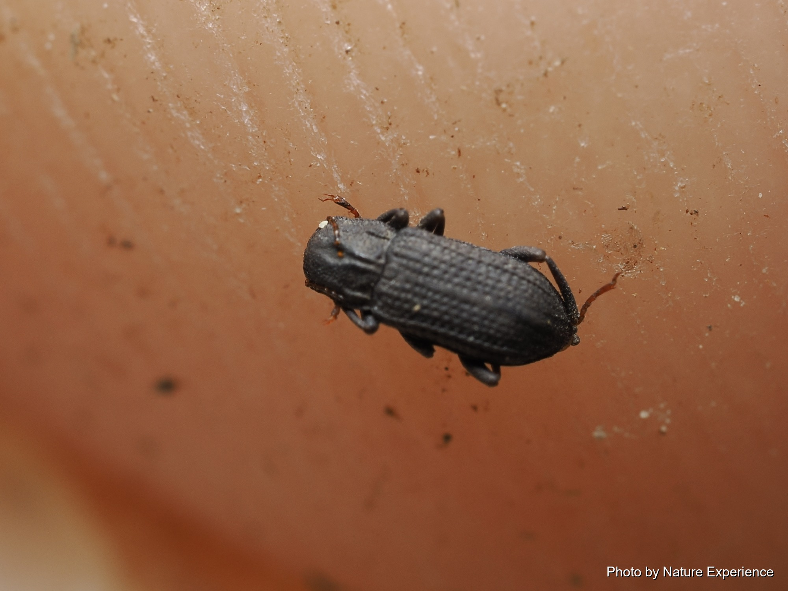
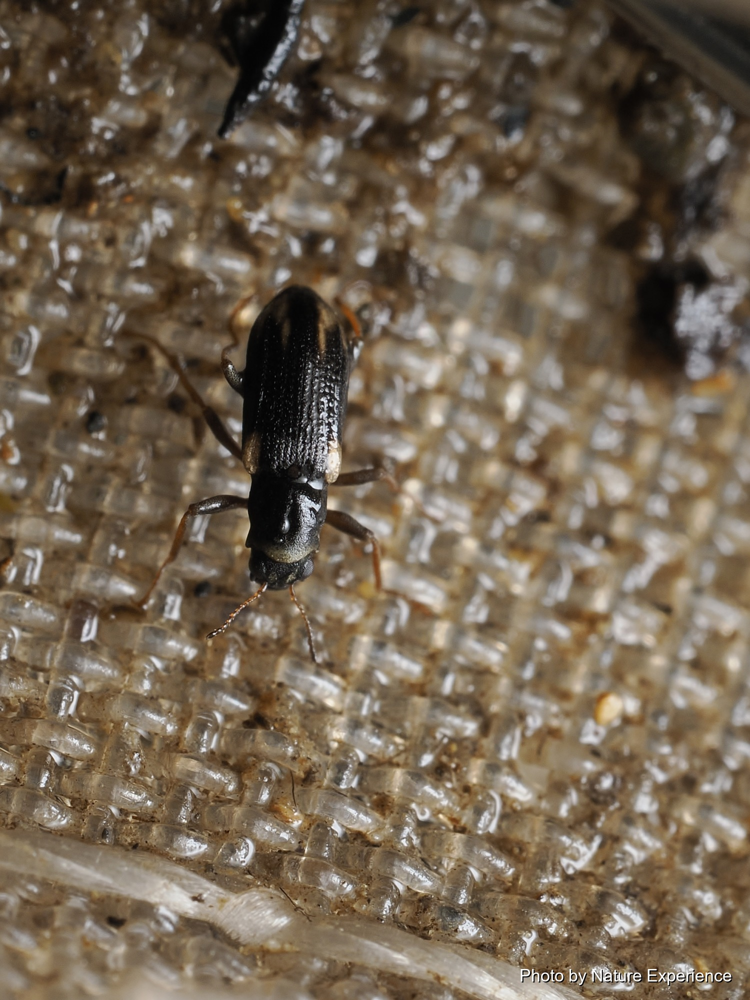
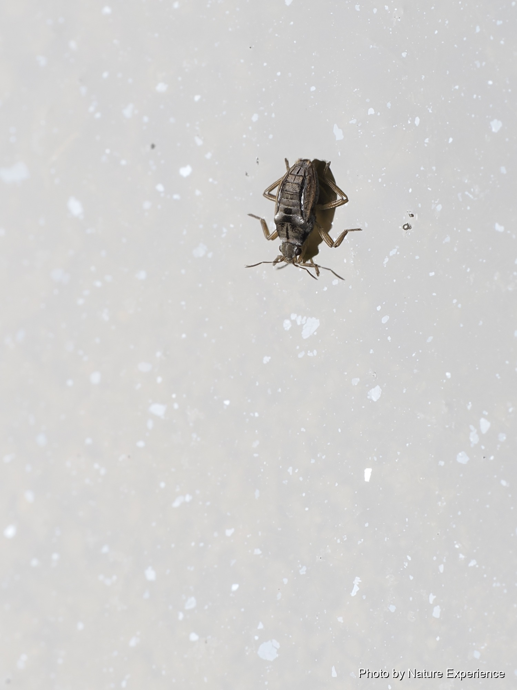
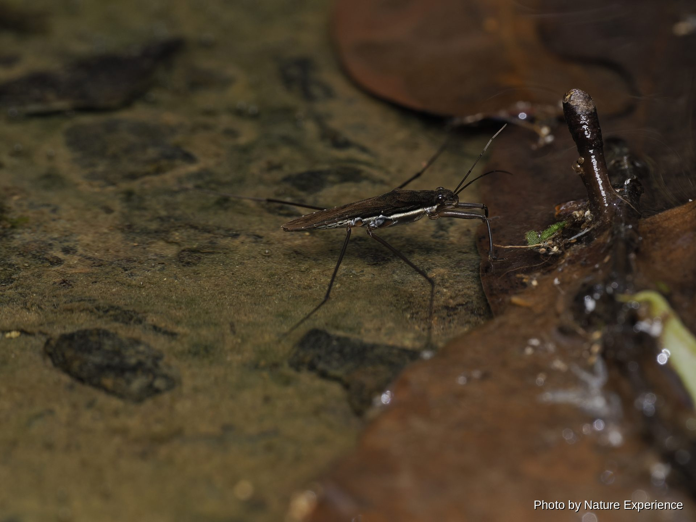
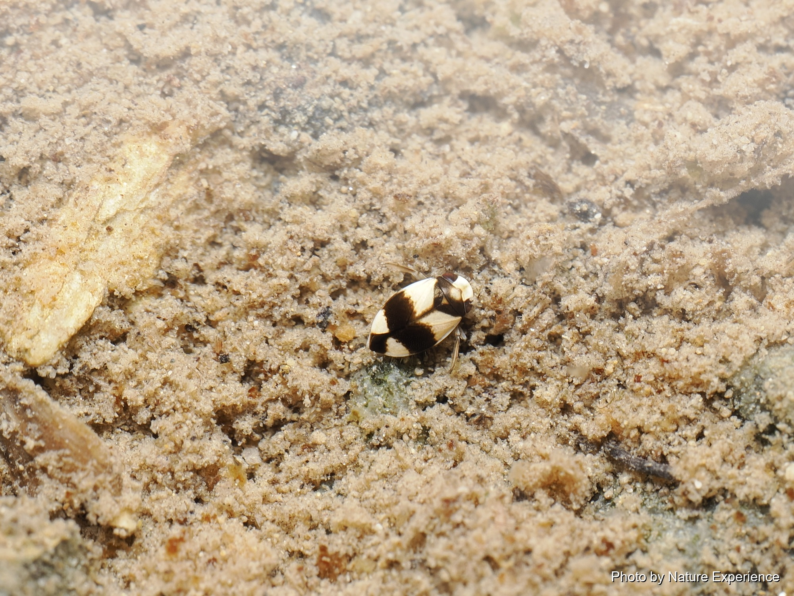
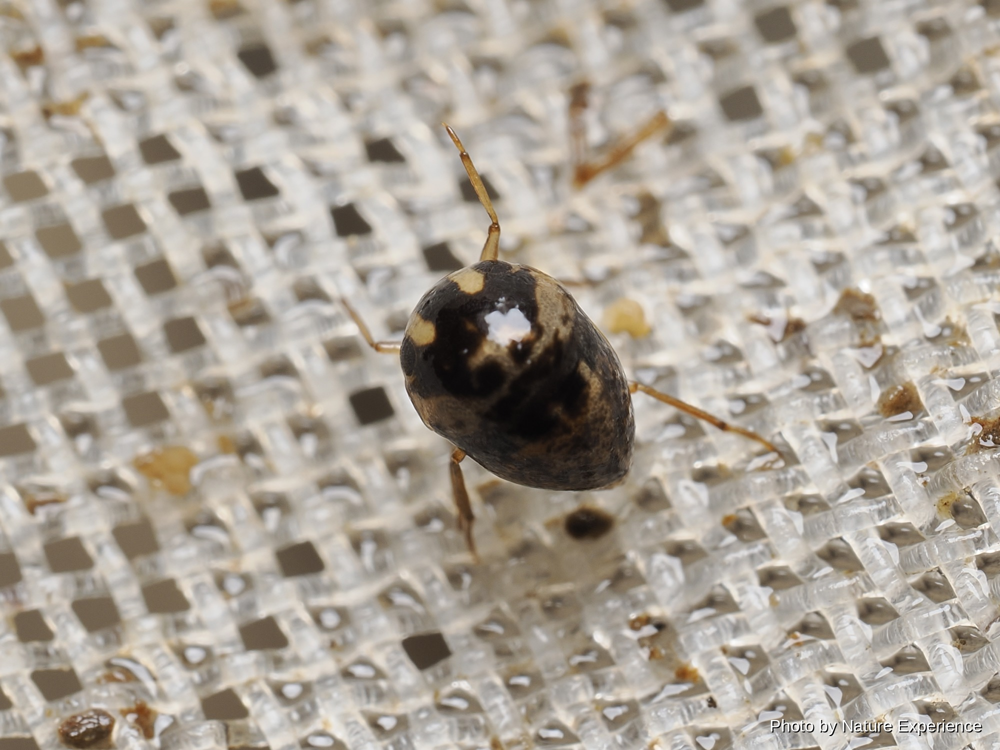
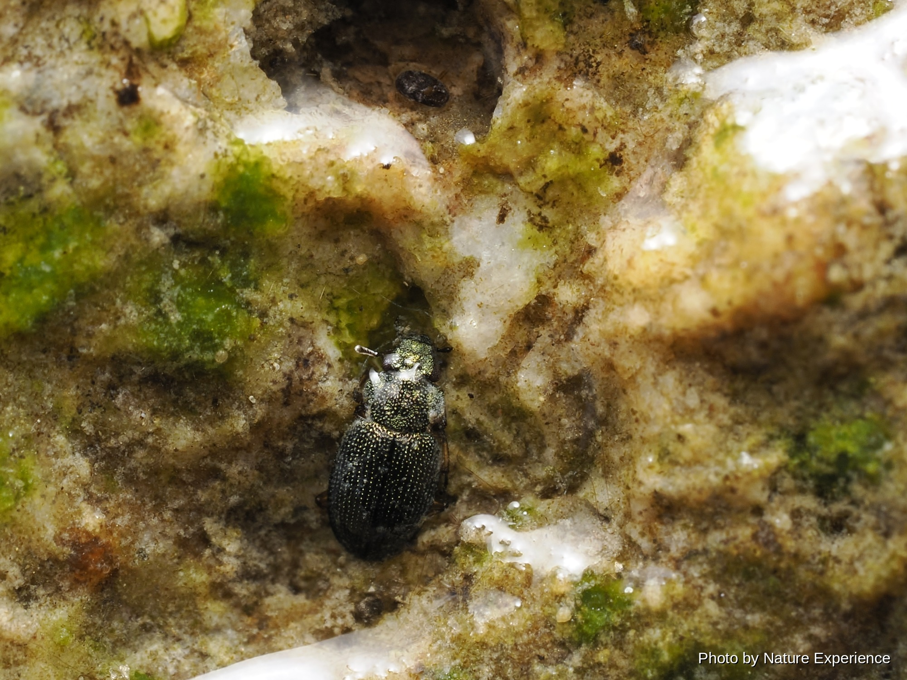
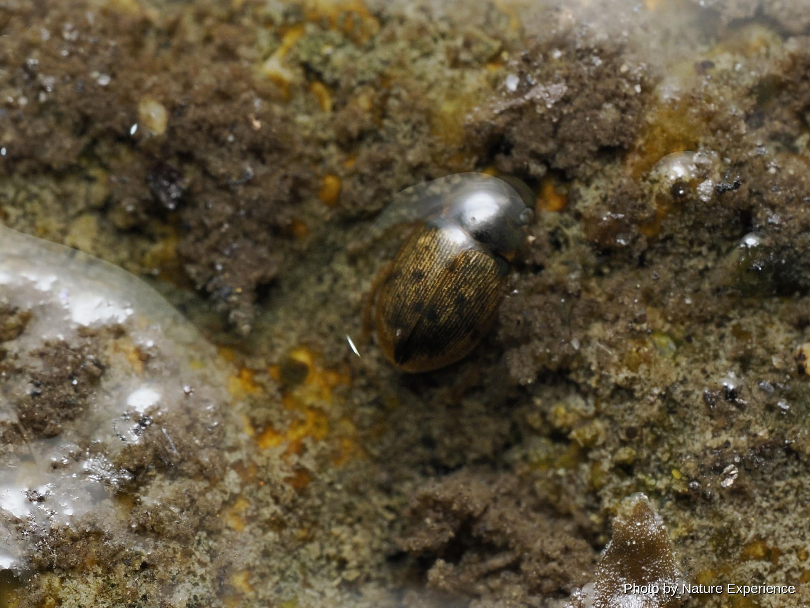

水生昆虫
―― 龙虱类 ――

正如种小名(意为"二紋的")所示，鞘翅上据称有两个斑纹的极小型龙虱。据说与近缘种相比体型更小，且头部表面的微网纹不完整，以此作为区分点。关于其详细生态、形态及分布固有性的一手资料很少，但在环境省昆虫类红色名录中被列为近危(NT)。
环境省红色名录:近危(NT)
体长约24〜29毫米。分布于本州、四国、九州、南西诸岛及小笠原诸岛，国外见于中国、朝鲜 半岛及台湾。体形呈长卵形、略扁平，背面光泽强烈，呈绿色至带褐色的黑色，鞘翅边缘有一圈 黄色镶边，是与褐色龙虱区分的要点。栖息于水生植物丰富的池沼、湿地，以及水田及其周边水 洼、休耕田、水流平缓的水渠。自1960年代以来，由于农药使用及圃场整备，本州以南地区数 量急剧减少，已被列入环境省红色名录的易危(VU)等级，但在南西诸岛仍相对常见。其体形和 色调与褐色龙虱非常相似，仅凭照片很难区分。
环境省红色名录:易危(VU)
体长约11〜14毫米。分布于屋久岛以南的南西诸岛，国外见于台湾、中国及东南亚的南方型龙 虱。栖息于水生植物丰富的池沼、水田等静水域。除了栖息环境减少外，近年发现包括本种在内 的多种龙虱因疑似以饲养为目的而被大量贩卖，因此2023年1月与其他龙虱一同被指定为特定第 二种国内稀有野生动植物种。该指定仅限制以贩卖、分发为目的的捕获及转让，以观察为目的的 采集不在限制范围内。与分布于本州以西的同属近缘种十分相似，但由于分布范围不同，比较容 易区分。
禁止以贩卖、分发为目的的捕获(特定第二种国内稀有野生动植物种)体长18〜25毫米。日本国内分布于南西诸岛(中之岛以南)及大东诸岛，国外分布于中国、台 湾、东南亚及南亚。外形与黑龙虱十分相似，但体形略呈细长卵形，背面呈有光泽的绿色至黑褐 色。在分布于南西诸岛的近缘种中，被认为是数量相对稳定的一种。栖息于水生植物丰富的浅水 池塘及休耕水田。

体长约10〜11毫米的小型龙虱。鞘翅整体呈黄褐色，没有明显的条纹。分布于本州(关东地方以 西)、四国、九州、对马、南西诸岛及大东诸岛，国外见于中国、台湾及东南亚。栖息于水田、池 沼等开阔的静水域。在南西诸岛的龙虱中，与褐色龙虱、小龙虱一起，被认为是数量相对稳定的 种类。
―― 长角泥甲类 ――

分布于奄美群岛、冲绳诸岛及关岛的小型水生甲虫。长角泥甲科主要栖息于清澈溪流，幼虫和成 虫都在水中生活，体长最大约5毫米，也因此作为清澈河流的指标而受到关注。本种自身的详细 生态目前仍有许多未解之谜。

仅分布于奄美大岛的特有种，2005年被记载。同属(宽体泥甲属)还包括分布于本州、四国、九 州的宽体泥甲及其近缘小型种，以及分布于大隅群岛的另一特有种。长角泥甲科主要是栖息于清 澈溪流的小型水生甲虫，但本种自身的详细生态目前仍有许多未解之谜。

分布于奄美群岛、冲绳诸岛、八重山诸岛及关岛的小型水生甲虫。冲绳岛的种群被区分为独立亚 种(冲绳沟泥甲)。长角泥甲科主要栖息于清澈溪流，但本种自身的详细生态目前仍有许多未解之 谜。

奄美大岛特有种，2017年才被记载的新种。其形态与分布于日本本土及台湾的同属其他种不 同，而交尾器的形状等特征与分布于中国南部的一个种非常相似，表明两者关系密切。因此被视 为"遗存固有种"的一个例子：其祖先种被认为曾广泛分布于欧亚大陆，奄美大岛孤立后，其他地 区的近缘种群相继灭绝，唯独本种存活至今。长角泥甲科主要是栖息于清澈溪流的小型水生甲 虫，但本种自身的详细生态目前仍有许多未解之谜。

分布于奄美群岛及冲绳诸岛的小型水生甲虫。泽泥甲属在日本已知有8种，各种分布范围从本州 到八重山诸岛不等。长角泥甲科主要栖息于清澈溪流，但本种自身的详细生态目前仍有许多未解 之谜。

分布于奄美群岛及冲绳诸岛的小型水生甲虫。原本被视为独立属中的唯一种，但2021年的分子 系统学研究(Kobayashi et al., 2021)将其归入长足沟泥甲属。属名(Nomuraelmis)及日文俗名由佐藤正孝博士于1964年命名，据信是为纪念同时代开拓日 本长角泥甲科研究的野村镇博士而得名。本种自身的详细生态目前仍有许多未解之谜。

为奄美大岛、冲永良部岛有记录的小型水生甲虫。过去曾被视为分布于本州以西近缘种的琉球列 岛亚种，但2014年一项通过COI基因分析及形态比较的研究确认两者之间存在种级水平的巨大 遗传分歧，因而被提升为独立种。目前已普遍认定其为独立物种。扁泥甲科与长角泥甲科为近缘 类群，同样栖息于清澈溪流。本种自身的详细生态目前仍有许多未解之谜。

分布于奄美群岛、冲绳诸岛(冲绳岛本身无记录)的小型水生甲虫，2007年被记载。华爪泥甲属 在日本仅知2种，另一种分布于九州。本种自身的详细生态目前仍有许多未解之谜。

分布于大隅群岛、吐噶喇列岛、奄美群岛及冲绳诸岛的小型水生甲虫。光泽泥甲属中，2020年 又从九州新记载了第二个种，使日本已知的本属种类增至2种。吐噶喇列岛口之岛的种群被区分 为独立亚种。本种自身的详细生态目前仍有许多未解之谜。
―― 水黾类 ――

在奄美大岛被记录到，之后也在冲绳本岛发现的小型宽肩蝽。近缘种游宽肩蝽偏好森林环绕的山谷池塘岸边的砾石或岩盘地带，已确认会以卵的形态在水面漂浮的植物碎片或岸边砾石上越冬，但本种自身的具体生态仍不清楚。另外需要注意的是，环境省红色名录中被列为易危(VU)的是近缘种游宽肩蝽，与本种(奄美游宽肩蝽)是不同的物种，不应混淆；本种自身并未列入该红色名录。

体长约1.5〜2.1毫米的小型水生昆虫。分布于本州(福岛县以西)、四国、九州，在南西诸岛则 分布于喜界岛至冲绳岛一带。常见于细流旁阴暗的水洼及岩石背阴处，捕食落在水面上的小型昆 虫。

体长约1.7〜1.9毫米的小型水生昆虫。分布于南西诸岛(奄美群岛至八重山诸岛)及台湾。常见 于山间林道旁渗水形成的小水洼，学术研究曾报道其雄性长时间守护雌性的配偶行为。

体长约1.5〜2毫米，是宽肩蝽科中体型最小的一类。分布于本州、四国、九州、对马、南西诸 岛及大东诸岛(南大东岛)，国外也广泛分布于朝鲜半岛、中国、东南亚、台湾乃至大洋洲。喜欢 栖息在小水田、细流等有水流的水边，捕食落在水面上的小型昆虫。宽肩蝽科中既有不能飞的无 翅型，也有能飞的长翅型。

体长11〜16毫米左右，带红褐色的大型水黾。分布广泛，从北海道到九州的日本各地均有分布，偏好池沼、河流、湿地等水域，尤其喜欢水温较低的地方。以成虫形态在陆地上越冬，苏醒后会飞往新的水域，因此早春时节常在小水洼中见到。

分布于南西诸岛(宝岛至冲绳岛)。溪宽肩蝽属在日本已知有数种，是栖息于河流及池塘岸边的 类群。本种自身的详细生态目前尚未获得充分的资料确认。
―― 划蝽类 ――

划蝽科(旧分类中的划蝽科)的近缘类群，体长约1毫米的极小型水生蝽，奄美小水生蝽。 学名尚未确定。个人观察博客中提到，冲绳本岛河流上游可能存在一种未记载的该属物种，但尚未确认是否与本种(奄美小水生蝽)为同一物种，两者的关系仍不清楚。平时潜伏在沙子或落叶下，受到惊扰时会迅速游走。

日本产蟾蝽科唯一的一种，体长约1厘米，体形宽扁。无单眼，前足粗壮呈镰刀状是其特征。其日文名称Ashibuto-memizumushi，字面意思是"粗腿水生蝽"，但尽管如此，它并不生活在池沼水中，而是一种半陆生的伏击型捕食者，夜间活动于海岸沙滩(从水边到海岸林之间)，捕食潮虫和鼠妇，以成虫形态越冬。分布范围广，从南九州经南西诸岛一直到小笠原诸岛，并非奄美大岛的固有种。

日本产该科唯一的一种，体长2.5〜3毫米左右，呈半球形的小型身体。与仰蝽一样腹面朝上游泳。仅分布于奄美大岛、德之岛，为奄美群岛固有种，栖息在水流平缓的河流中，陆地植物根系垂入水中的场所等处。在环境省昆虫类红色名录中被列为易危(VU)。
环境省红色名录:易危(VU)―― 牙甲类 ――

1997年春在奄美大岛偶然采集到的个体为基础记载的新种，是一种小型水生甲虫。体长1.9〜2.3毫米。分布于奄美大岛与冲绳岛，栖息在山区溪流中较为开阔的地方，但个体数量并不多。河川开发与护岸工程导致的栖息环境恶化令人担忧，在2010年环境省红色名录的修订中被新列为近危(NT)。
环境省红色名录:近危(NT)
目前仅从奄美大岛、德之岛记录到的小型牙甲科甲虫。日本产蚬牙甲属(蚬牙甲亚属)中还有姬蚬牙甲、冲绳蚬牙甲等多个近缘种，区分时都需要观察交配器。关于体长与生态的详细记录很少，仍有许多未知之处。